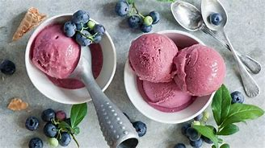

Italian dinner Menu
Antipasti
- Bruschetta al Pomodoro
- Toasted bread topped with diced tomatoes, garlic, basil, and olive oi
- Carpaccio di Manzo
- Thinly sliced raw beef served with arugula, Parmesan cheese, and lemon vinaigrette
- Insalata di Mare
- Seafood salad with shrimp, calamari, mussels, and lemon dressing


primi Piatti
- Risotto ai Funghi Porcini
- Creamy risotto with porcini mushrooms, garlic, and white wine
- Gnocchi alla Sorrentina
- Potato dumplings baked with tomato sauce, mozzarella, and basil
- Linguine alle Vongole
- Linguine pasta with fresh clams, garlic, white wine, and parsley


Secondi Piatti
- Pollo alla Parmigiana
- Breaded chicken breast topped with marinara sauce and melted mozzarella
- Bistecca alla Fiorentina
- Grilled T-bone steak seasoned with olive oil, salt, and pepper
- Pesce al Forno
- Oven-baked fish fillet with lemon, garlic, and herbs


Contorni
- Patate Arrosto
- Roasted potatoes with rosemary and garlic
- Verdure Grigliate
- Grilled vegetables with olive oil and balsamic glaze
- Rucola e Pomodoro
- Arugula and tomato salad with lemon vinaigrette


Dolci
- Tiramisu
- Classic Italian dessert made with coffee-soaked ladyfingers and mascarpone cream
- Panna Cotta
- Creamy custard dessert served with berry compote
- Gelato 
- Assorted flavors of Italian ice cream